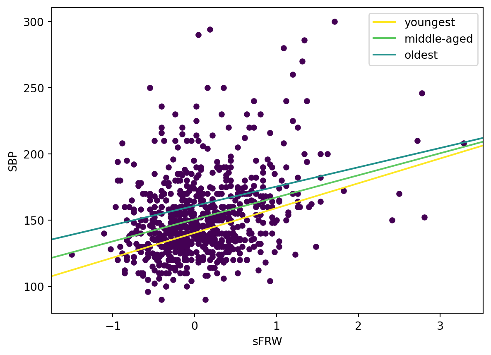
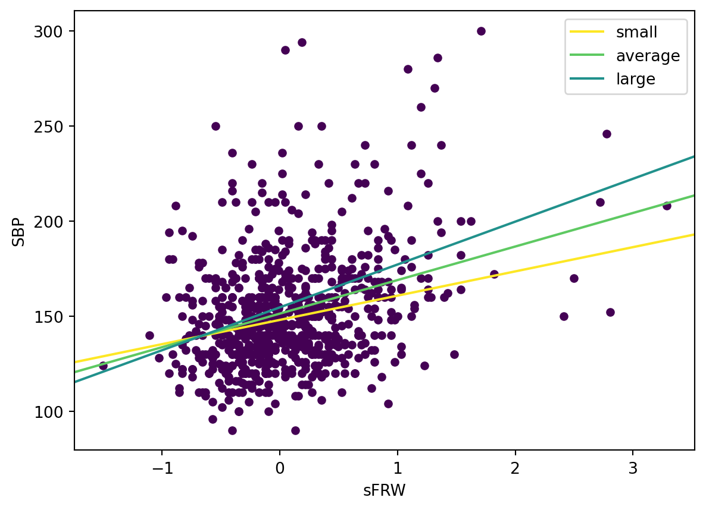
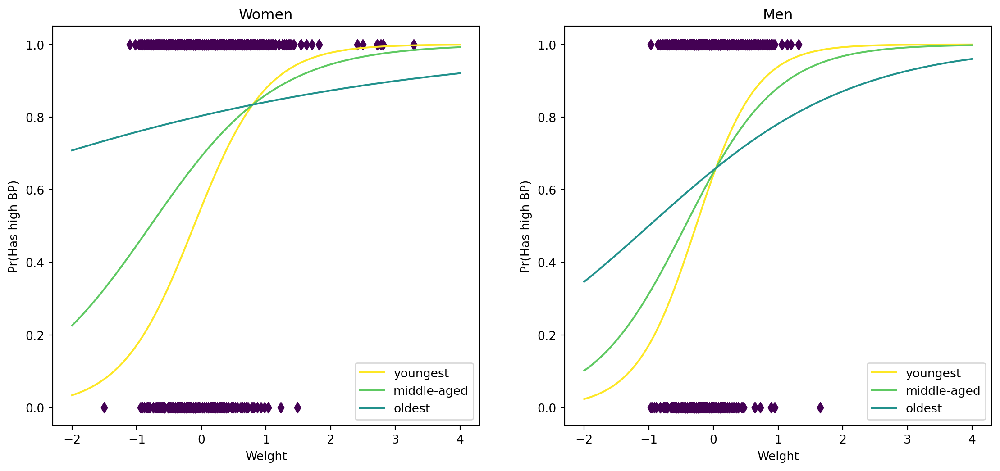
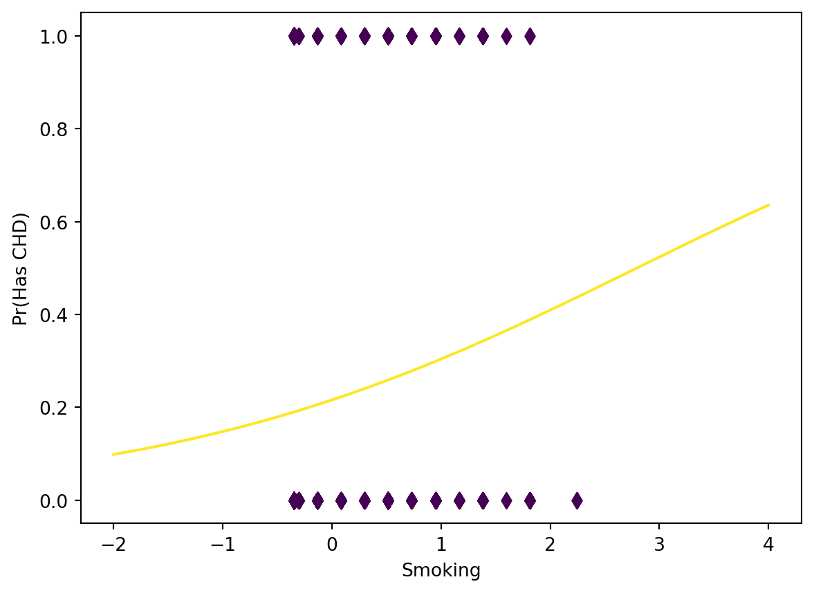

# exercise 0
# Put your solution here!
import numpy as np
import matplotlib.pyplot as plt
import statsmodels
import statsmodels.api as sm
import statsmodels.formula.api as smf
# plots a line given an intercept and a slope
from statsmodels.graphics.regressionplots import abline_plot
import pandas as pdRegression Analysis Project
Note
My code inputs in each code block are preceded by # Put your solution here! line, and the textual inputs are found inside solid violet borders.
Prerequisites
Import all the modules you will need in this notebook here:
Linear Regression
We continue analysing the fram heart disease data.
First load the data, use the name fram for the DataFrame variable. Make sure that in the data you loaded the column and row headers are in place. Checkout the summary of the variables using the describe method.
# exercise 1
def get_path(filename):
import sys
import os
prog_name = sys.argv[0]
if os.path.basename(prog_name) == "__main__.py": # Running under TMC
return os.path.join(os.path.dirname(prog_name), "..", "src", filename)
else:
return filename
# Put your solution here!
fram = pd.read_csv(get_path("fram.txt"), sep="\t")
fram.describe()| ID | AGE | FRW | SBP | SBP10 | DBP | CHOL | CIG | CHD | DEATH | YRS_DTH | |
|---|---|---|---|---|---|---|---|---|---|---|---|
| count | 1394.000000 | 1394.000000 | 1394.000000 | 1394.000000 | 767.000000 | 1394.000000 | 1394.000000 | 1394.000000 | 1394.000000 | 1394.000000 | 1394.000000 |
| mean | 4737.184362 | 52.431133 | 105.365136 | 148.086083 | 148.040417 | 90.135581 | 234.644907 | 8.029412 | 1.187948 | 1.700861 | 16.219512 |
| std | 1073.406896 | 4.781507 | 17.752489 | 28.022062 | 25.706664 | 14.226235 | 46.303822 | 11.584138 | 2.615976 | 3.203132 | 3.921413 |
| min | 1070.000000 | 45.000000 | 52.000000 | 90.000000 | 94.000000 | 50.000000 | 96.000000 | 0.000000 | 0.000000 | 0.000000 | 1.000000 |
| 25% | 3890.250000 | 48.000000 | 94.000000 | 130.000000 | 130.000000 | 80.000000 | 200.000000 | 0.000000 | 0.000000 | 0.000000 | 18.000000 |
| 50% | 4821.000000 | 52.000000 | 103.000000 | 142.000000 | 145.000000 | 90.000000 | 230.000000 | 0.000000 | 0.000000 | 0.000000 | 18.000000 |
| 75% | 5641.750000 | 56.000000 | 114.000000 | 160.000000 | 160.000000 | 98.000000 | 264.000000 | 20.000000 | 0.000000 | 0.000000 | 18.000000 |
| max | 6442.000000 | 62.000000 | 222.000000 | 300.000000 | 264.000000 | 160.000000 | 430.000000 | 60.000000 | 10.000000 | 10.000000 | 18.000000 |
Create function rescale that takes a Series as parameter. It should center the data and normalize it by dividing by 2 \(\sigma\), where \(\sigma\) is the standard deviation. Return the rescaled Series.
# exercise 2
# Put your solution here!
def rescale(s):
center = s.mean()
normal = 2*s.std()
return (s-center)/normalAdd to the DataFrame the scaled versions of all the continuous variables (with function rescale). Add small letter s in front of the original variable name to get the name of the scaled variable. For instance, AGE -> sAGE.
# exercise 3
# Put your solution here!
new = ["s"+x for x in fram.columns[2:9].drop("SBP10")]
fram[new] = rescale(fram.loc[:, "AGE":"CIG"].drop("SBP10", axis=1))
# fram.describe() # The rescaled variables have mean 0 and std 0.5
# The rescaling makes the beta cofficients of continuous variables comparable to the coefficients of binary variables.
# Gelman, A. (2008). Scaling regression inputs by dividing by two standard deviations. Statistics in Medicine,
# 27(15), 2865–2873. https://doi.org/10.1002/sim.3107Form a model that predicts systolic blood pressure using weight, gender, and cholesterol level as explanatory variables. Store the fitted model in variable named fit.
# exercise 4
# Put your solution here!
fit = smf.ols('SBP ~ SEX + sFRW + sCHOL', data=fram).fit()
print(fit.summary()) OLS Regression Results
==============================================================================
Dep. Variable: SBP R-squared: 0.125
Model: OLS Adj. R-squared: 0.123
Method: Least Squares F-statistic: 66.37
Date: Thu, 20 Jun 2024 Prob (F-statistic): 4.13e-40
Time: 23:33:55 Log-Likelihood: -6530.4
No. Observations: 1394 AIC: 1.307e+04
Df Residuals: 1390 BIC: 1.309e+04
Df Model: 3
Covariance Type: nonrobust
===============================================================================
coef std err t P>|t| [0.025 0.975]
-------------------------------------------------------------------------------
Intercept 150.0199 0.985 152.336 0.000 148.088 151.952
SEX[T.male] -4.0659 1.451 -2.803 0.005 -6.912 -1.220
sFRW 17.7205 1.426 12.431 0.000 14.924 20.517
sCHOL 4.9169 1.431 3.436 0.001 2.110 7.724
==============================================================================
Omnibus: 327.612 Durbin-Watson: 1.774
Prob(Omnibus): 0.000 Jarque-Bera (JB): 843.676
Skew: 1.237 Prob(JB): 6.28e-184
Kurtosis: 5.899 Cond. No. 2.79
==============================================================================
Notes:
[1] Standard Errors assume that the covariance matrix of the errors is correctly specified.Add the variable AGE to the model and inspect the estimates of the coefficients using the summary method of the fitted model. Again use the name fit for the fitted model. (From now on assume that we always use the name fit for the variable of the fitted model.)
# exercise 5
# Put your solution here!
fit = smf.ols('SBP ~ SEX + sFRW + sCHOL + sAGE', data=fram).fit()
print(fit.summary()) OLS Regression Results
==============================================================================
Dep. Variable: SBP R-squared: 0.146
Model: OLS Adj. R-squared: 0.144
Method: Least Squares F-statistic: 59.39
Date: Thu, 20 Jun 2024 Prob (F-statistic): 2.44e-46
Time: 23:33:55 Log-Likelihood: -6513.6
No. Observations: 1394 AIC: 1.304e+04
Df Residuals: 1389 BIC: 1.306e+04
Df Model: 4
Covariance Type: nonrobust
===============================================================================
coef std err t P>|t| [0.025 0.975]
-------------------------------------------------------------------------------
Intercept 150.1695 0.974 154.221 0.000 148.259 152.080
SEX[T.male] -4.3805 1.435 -3.053 0.002 -7.195 -1.566
sFRW 16.9771 1.415 11.999 0.000 14.202 19.753
sCHOL 4.2696 1.419 3.009 0.003 1.486 7.053
sAGE 8.1332 1.400 5.810 0.000 5.387 10.879
==============================================================================
Omnibus: 321.087 Durbin-Watson: 1.807
Prob(Omnibus): 0.000 Jarque-Bera (JB): 840.955
Skew: 1.206 Prob(JB): 2.45e-183
Kurtosis: 5.944 Cond. No. 2.82
==============================================================================
Notes:
[1] Standard Errors assume that the covariance matrix of the errors is correctly specified.How much does the inclusion of age increase the explanatory power of the model? Which variables explain the variance of the target variable most?
For the first question, first, it’s important to define R-squared. The R-squared gives an estimate of how much of the variation in y (dependent variable) is explained by the x’s (explanatory variables). A value of 1.00 means all the variation in y is explained by the x’s. The model including sAGEand its interactions have higher R-squared (higher is better) than the model without these variables, a difference of 0.021. The same is true with the adjusted R-squared, which penalizes the addition of more explanatory variables. It’s important to remember not to put too much weight on the R-squared in terms of model evaluation. For the next question, the outputs produced so far from the codes cannot answer this question. The package dominance-analysis may be useful for answering this question. Now, what the outputs could show are the differences in the magnitude of their effect on the dependent variable, which are now easily compared due to the rescaling earlier. Each beta coefficient now corresponds to a change of two standard deviations (1 unit change in a variable with 0.5 standard deviation). Given this, comparing the absolute value of their beta coefficients, this is the order of explanatory variables: sFRW, sAGE, SEX, sCHOL. In this case, however, the results from my implementation of the dominance-analysis package reveal a similar story.
from dominance_analysis import Dominance_Datasets
from dominance_analysis import Dominance
dom_data = fram[["SBP", "SEX", "sFRW", "sCHOL", "sAGE"]]
dom_data.SEX = (dom_data.SEX == "male")
dom_data.SEX = dom_data.SEX.astype("int")
dominance_regression=Dominance(data=dom_data,target='SBP',objective=1)
incr_variable_rsquare=dominance_regression.incremental_rsquare()
dominance_regression.dominance_stats()
percentage_relative_importance = {'sFRW': 67.71633624572831, 'sAGE': 17.724686667202082,
'SEX': 8.476548868422698, 'sCHOL': 6.082428218646909}Try to add to the model all the interactions with other variables.
# exercise 6
# Put your solution here!
fit = smf.ols('SBP ~ SEX + SEX:sFRW + SEX:sCHOL + SEX:sAGE + sFRW + sFRW:sCHOL + sFRW:sAGE + sCHOL + sCHOL:sAGE + sAGE',
data=fram).fit()
print(fit.summary()) OLS Regression Results
==============================================================================
Dep. Variable: SBP R-squared: 0.151
Model: OLS Adj. R-squared: 0.144
Method: Least Squares F-statistic: 24.52
Date: Thu, 20 Jun 2024 Prob (F-statistic): 4.92e-43
Time: 23:33:55 Log-Likelihood: -6509.9
No. Observations: 1394 AIC: 1.304e+04
Df Residuals: 1383 BIC: 1.310e+04
Df Model: 10
Covariance Type: nonrobust
=====================================================================================
coef std err t P>|t| [0.025 0.975]
-------------------------------------------------------------------------------------
Intercept 150.5439 1.001 150.355 0.000 148.580 152.508
SEX[T.male] -4.7309 1.451 -3.261 0.001 -7.577 -1.885
sFRW 16.6450 1.723 9.660 0.000 13.265 20.025
SEX[T.male]:sFRW 1.6673 3.088 0.540 0.589 -4.390 7.725
sCHOL 3.6181 1.878 1.926 0.054 -0.066 7.302
SEX[T.male]:sCHOL 1.0231 2.933 0.349 0.727 -4.730 6.776
sAGE 10.2189 2.003 5.101 0.000 6.289 14.149
SEX[T.male]:sAGE -4.2923 2.886 -1.488 0.137 -9.953 1.368
sFRW:sCHOL 4.9729 2.718 1.829 0.068 -0.359 10.305
sFRW:sAGE -2.0866 2.803 -0.744 0.457 -7.585 3.412
sCHOL:sAGE -4.7564 3.044 -1.563 0.118 -10.728 1.215
==============================================================================
Omnibus: 313.112 Durbin-Watson: 1.798
Prob(Omnibus): 0.000 Jarque-Bera (JB): 802.290
Skew: 1.185 Prob(JB): 6.10e-175
Kurtosis: 5.863 Cond. No. 6.02
==============================================================================
Notes:
[1] Standard Errors assume that the covariance matrix of the errors is correctly specified.Then visualize the model as the function of weight for the youngest (sAGE=-1.0), middle aged (sAGE=0.0), and oldest (sAGE=1.0) women while assuming the background variables to be centered. Remember to consider the changes in the intercept and in the regression coefficient caused by age. Visualize both the data points and the fitted lines.
# exercise 7
# Put your solution here!
# Defining colors based on viridis color map (yellow - violet)
viridis = {
0: "#fde725",
1: "#addc30",
2: "#5ec962",
3: "#28ae80",
4: "#21918c",
5: "#2c728e",
6: "#3b528b",
7: "#472d7b",
8: "#440154"
}
p = fit.params
# SEX = "female"
fram[fram.SEX=="female"].plot.scatter("sFRW", "SBP", c=viridis[8])
## Youngest, sAGE = -1.0
abline_plot(intercept=p.Intercept - p["sAGE"], slope=p.sFRW - p["sFRW:sAGE"],
ax=plt.gca(), color=viridis[0], label="youngest")
## Middle-aged, sAGE = 0.0
abline_plot(intercept=p.Intercept, slope=p.sFRW,
ax=plt.gca(), color=viridis[2], label="middle-aged")
## Oldest, sAGE = 1.0
abline_plot(intercept=p.Intercept + p["sAGE"], slope=p.sFRW + p["sFRW:sAGE"],
ax=plt.gca(), color=viridis[4], label="oldest")
plt.legend()
How does the dependence of blood pressure on weight change as a person gets older? This question can be formally answered by taking the second-order mixed partial derivative of this regression function:
\[
\widehat{SBP} = 150.5439 + ... + 16.6450⋅sFRW + 10.2189⋅sAGE - 2.0866(sFRW⋅sAGE) + ...
\] The first partial derivative, change in SBP with respect to change in sFRW, is what the question means with the dependence of blood pressure on weight change. \[
\frac{∂\widehat{SBP}}{∂sFRW} = 16.6450 - 2.0866⋅sAGE
\] The second partial derivative, meanwhile, is the change in the dependence of blood pressure on weight change as age changes. \[
\frac{∂\widehat{SBP}}{∂sFRW}\frac{∂}{∂sAGE} = - 2.0866
\] The negative sign indicates the decreasing dependence of blood pressure on weight change decreases as a person gets older. This property is also shown in the illustration earlier. The slope of the line gets flatter and flatter from the youngest to the oldest age group of women. Although dampened, given the negative coefficient of the interaction SEX⋅sAGe, this property applies to the men as well.
Even more accurate model
Include the background variable sCIG from the data and its interactions. Visualize the model for systolic blood pressure as the function of the most important explanatory variable. Visualize separate lines for the small (-1.0), average (0.0), and large (1.0) values of sCHOL. Other variables can be assumed to be at their mean value.
# exercise 8
# Put your solution here!
fit = smf.ols('SBP ~ SEX + SEX:sFRW + SEX:sCHOL + SEX:sAGE + SEX:sCIG + sFRW + sFRW:sCHOL + sFRW:sAGE + sFRW:sCIG + sCHOL \
+ sCHOL:sAGE + sCHOL:sCIG + sAGE + sAGE:sCIG + sCIG',
data=fram).fit()
print(fit.summary())
# Visualization
# Defining colors based on viridis color map (yellow - violet)
# I had to redefine it for each block to work with the test.
viridis = {
0: "#fde725",
1: "#addc30",
2: "#5ec962",
3: "#28ae80",
4: "#21918c",
5: "#2c728e",
6: "#3b528b",
7: "#472d7b",
8: "#440154"
}
p = fit.params
fram[fram.SEX=="female"].plot.scatter("sFRW", "SBP", c=viridis[8])
# Small sCHOL = -1.0
abline_plot(intercept=p.Intercept - p["sCHOL"], slope=p.sFRW - p["sFRW:sCHOL"],
ax=plt.gca(), color=viridis[0], label="small")
# Average sCHOL = 0.0
abline_plot(intercept=p.Intercept, slope=p.sFRW,
ax=plt.gca(), color=viridis[2], label="average")
# Large sCHOL = 1.0
abline_plot(intercept=p.Intercept + p["sCHOL"], slope=p.sFRW + p["sFRW:sCHOL"],
ax=plt.gca(), color=viridis[4], label="large")
plt.legend() OLS Regression Results
==============================================================================
Dep. Variable: SBP R-squared: 0.152
Model: OLS Adj. R-squared: 0.143
Method: Least Squares F-statistic: 16.50
Date: Thu, 20 Jun 2024 Prob (F-statistic): 2.99e-40
Time: 23:33:56 Log-Likelihood: -6508.6
No. Observations: 1394 AIC: 1.305e+04
Df Residuals: 1378 BIC: 1.313e+04
Df Model: 15
Covariance Type: nonrobust
=====================================================================================
coef std err t P>|t| [0.025 0.975]
-------------------------------------------------------------------------------------
Intercept 151.3182 1.160 130.456 0.000 149.043 153.594
SEX[T.male] -5.3834 1.598 -3.368 0.001 -8.519 -2.248
sFRW 17.6415 1.866 9.455 0.000 13.981 21.302
SEX[T.male]:sFRW -0.1140 3.441 -0.033 0.974 -6.865 6.637
sCHOL 3.2957 1.965 1.677 0.094 -0.559 7.151
SEX[T.male]:sCHOL 1.4369 3.142 0.457 0.648 -4.727 7.600
sAGE 10.3615 2.119 4.890 0.000 6.205 14.518
SEX[T.male]:sAGE -4.4248 3.179 -1.392 0.164 -10.661 1.811
sCIG 3.7733 3.106 1.215 0.225 -2.319 9.865
SEX[T.male]:sCIG -3.9094 3.599 -1.086 0.278 -10.970 3.151
sFRW:sCHOL 4.8912 2.735 1.788 0.074 -0.475 10.257
sFRW:sAGE -1.8501 2.848 -0.650 0.516 -7.437 3.737
sFRW:sCIG 3.6765 3.373 1.090 0.276 -2.941 10.294
sCHOL:sAGE -4.8509 3.091 -1.569 0.117 -10.914 1.212
sCHOL:sCIG -1.6344 3.368 -0.485 0.628 -8.242 4.973
sAGE:sCIG -0.3247 3.143 -0.103 0.918 -6.490 5.840
==============================================================================
Omnibus: 303.518 Durbin-Watson: 1.802
Prob(Omnibus): 0.000 Jarque-Bera (JB): 750.095
Skew: 1.164 Prob(JB): 1.32e-163
Kurtosis: 5.738 Cond. No. 7.93
==============================================================================
Notes:
[1] Standard Errors assume that the covariance matrix of the errors is correctly specified.
How does the model and its accuracy look?
For this question, we can compare the R-squared between the two models, but since we are simply adding new variables from the previous model, it is better to compare the adjusted R-squared. The usual R-squared cannot fall if we add another explanatory variable. In this instance, for their respective R-squared and adjusted R-squared, the original model has 151 and 144, and this extended model has 152 and 143. The addition of sCIG and its interactions was not able to improve the model’s adjusted R-squared and in fact, gives a lower value. Even looking at the usual R-squared, there is little difference made. Now, it is important to be careful in omitting variables in a model. If sCIG has an effect on SBP and is correlated with the other explanatory variables in the model, we should not omit it. In this case, this is likely the case by looking at the changes in the beta coefficients of the other explanatory variables between the two models (with and without sCIG and its interactions). However, the beta coefficients of sCIG and its interactions are not statistically significant at the 10% level. On the other hand, a cursory look at medical literature will show that there may be a correlation between smoking and systolic blood pressure and smoking and other explanatory variables like cholesterol level. This is what I meant earlier by not relying solely on the value of the R-squared in model evaluation.
Logistic regression
def logistic(x):
return 1.0 / (1.0 + np.exp(-x))We will continue predicting high blood pressure by taking in some continuous background variables, such as the age.
Recreate the model HIGH_BP ~ sFRW + SEX + SEX:sFRW presented in the introduction. Make sure, that you get the same results. Use name fit for the fitted model. Compute and store the error rate into variable error_rate_orig.
# exercise 9
# Put your solution here!
# Define HIGH_BP
fram["HIGH_BP"] = (fram.SBP >= 140) | (fram.DBP >= 90)
fram.HIGH_BP = fram.HIGH_BP.astype("int")
# Fit the model
fit = smf.glm(formula="HIGH_BP ~ SEX + SEX:sFRW + sFRW", data=fram, family=sm.families.Binomial()).fit()
print(fit.summary())
# Obtain the error rate
error_rate_orig = np.mean(((fit.fittedvalues < 0.5) & fram.HIGH_BP) | ((fit.fittedvalues > 0.5) & ~fram.HIGH_BP))
print(f"error rate: {error_rate_orig}") Generalized Linear Model Regression Results
==============================================================================
Dep. Variable: HIGH_BP No. Observations: 1394
Model: GLM Df Residuals: 1390
Model Family: Binomial Df Model: 3
Link Function: Logit Scale: 1.0000
Method: IRLS Log-Likelihood: -856.87
Date: Thu, 20 Jun 2024 Deviance: 1713.7
Time: 23:33:57 Pearson chi2: 1.39e+03
No. Iterations: 4 Pseudo R-squ. (CS): 0.06351
Covariance Type: nonrobust
====================================================================================
coef std err z P>|z| [0.025 0.975]
------------------------------------------------------------------------------------
Intercept 0.7631 0.082 9.266 0.000 0.602 0.925
SEX[T.male] -0.1624 0.120 -1.350 0.177 -0.398 0.073
sFRW 1.0738 0.176 6.095 0.000 0.728 1.419
SEX[T.male]:sFRW 0.2709 0.287 0.943 0.346 -0.292 0.834
====================================================================================
error rate: 0.35581061692969873Add the sAGE variable and its interactions. Check the prediction accuracy of the model and compare it to the previous model. Store the prediction accuracy to variable error_rate.
# exercise 10
# Put your solution here!
# Fit the model
fit = smf.glm(formula="HIGH_BP ~ SEX + SEX:sAGE + SEX:sFRW + sAGE + sAGE:sFRW + sFRW", data=fram,
family=sm.families.Binomial()).fit()
print(fit.summary())
error_rate = np.mean(((fit.fittedvalues < 0.5) & fram.HIGH_BP) | ((fit.fittedvalues > 0.5) & ~fram.HIGH_BP))
print(f"error rate: {error_rate}") Generalized Linear Model Regression Results
==============================================================================
Dep. Variable: HIGH_BP No. Observations: 1394
Model: GLM Df Residuals: 1387
Model Family: Binomial Df Model: 6
Link Function: Logit Scale: 1.0000
Method: IRLS Log-Likelihood: -845.51
Date: Thu, 20 Jun 2024 Deviance: 1691.0
Time: 23:33:57 Pearson chi2: 1.39e+03
No. Iterations: 4 Pseudo R-squ. (CS): 0.07865
Covariance Type: nonrobust
====================================================================================
coef std err z P>|z| [0.025 0.975]
------------------------------------------------------------------------------------
Intercept 0.8079 0.084 9.569 0.000 0.642 0.973
SEX[T.male] -0.1983 0.121 -1.632 0.103 -0.436 0.040
sAGE 0.6008 0.173 3.466 0.001 0.261 0.941
SEX[T.male]:sAGE -0.5727 0.239 -2.392 0.017 -1.042 -0.103
sFRW 1.0196 0.180 5.670 0.000 0.667 1.372
SEX[T.male]:sFRW 0.3754 0.289 1.297 0.195 -0.192 0.943
sAGE:sFRW -0.7588 0.276 -2.750 0.006 -1.300 -0.218
====================================================================================
error rate: 0.3278335724533716Visualize the predicted probability of high blood pressure as the function of weight. Remember to use normalized values (rescale) also for those variables that are not included in the visualization, so that sensible values are used for them (data average). Draw two figures with altogether six curves: young, middle aged, and old women; and young, middle aged, and old men. Use plt.subplots. (Plotting works in similar fashion as in the introduction. The argument factors need, however, be changed as in the example about visualisation of continuous variable.)
# exercise 11
def logistic(x):
return 1.0 / (1.0 + np.exp(-x))
# Put your solution here!
# Defining colors based on viridis color map (yellow - violet)
viridis = {
0: "#fde725",
1: "#addc30",
2: "#5ec962",
3: "#28ae80",
4: "#21918c",
5: "#2c728e",
6: "#3b528b",
7: "#472d7b",
8: "#440154"
}
p = fit.params
# Plot the figures
## Setup the plot
fig, ax = plt.subplots(1,2, subplot_kw={"xlabel": "Weight", "ylabel": "Pr(Has high BP)"}, figsize=(14, 6))
## Women
ax[0].scatter(fram.sFRW[fram.SEX=="female"], fram.HIGH_BP[fram.SEX=="female"], c=viridis[8], marker="d")
X=np.linspace(-2, 4, 100)
### Youngest
ax[0].plot(X, logistic(X*(p.sFRW - p["sAGE:sFRW"]) + (p.Intercept - p.sAGE)), color=viridis[0], label="youngest")
### Middle-aged
ax[0].plot(X, logistic(X*p.sFRW + p.Intercept), color=viridis[2], label="middle-aged")
### Oldest
ax[0].plot(X, logistic(X*(p.sFRW + p["sAGE:sFRW"]) + (p.Intercept + p.sAGE)), color=viridis[4], label="oldest")
ax[0].set_title("Women")
ax[0].legend()
## Men
ax[1].scatter(fram.sFRW[fram.SEX=="male"], fram.HIGH_BP[fram.SEX=="male"], c=viridis[8], marker="d")
X=np.linspace(-2, 4, 100)
### Youngest
ax[1].plot(X, logistic(X*(p.sFRW + p["SEX[T.male]:sFRW"] - p["sAGE:sFRW"]) + (p["SEX[T.male]"] + p.Intercept - p.sAGE -
p["SEX[T.male]:sAGE"])), color=viridis[0], label="youngest")
### Middle-aged
ax[1].plot(X, logistic(X*(p.sFRW + p["SEX[T.male]:sFRW"]) + (p["SEX[T.male]"] + p.Intercept)), color=viridis[2],
label="middle-aged")
### Oldest
ax[1].plot(X, logistic(X*(p.sFRW + p["SEX[T.male]:sFRW"] + p["sAGE:sFRW"]) + (p["SEX[T.male]"] + p.Intercept + p.sAGE +
p["SEX[T.male]:sAGE"])), color=viridis[4], label="oldest")
ax[1].set_title("Men")
ax[1].legend()
How do the models with different ages and genders differ from each other?
To answer this question, it would be helpful to go through the process of determining the relevant equation for each of the groups. I’ll focus on the input x on the logistic function we defined earlier.
For women, with SEX = 0, the other variables are dropped.
\[
\widehat{HIGH\_BP}_{women} = 0.8079 + 0.6008⋅sAGE + 1.0196⋅sFRW - 0.7588(sAGE⋅sFRW)
\] For different age groups, we set sAGE equals to -1 for the youngest, 0 for the middle-aged, and 1 for the oldest age groups.
\[ \begin{aligned} \widehat{HIGH\_BP}_{women, youngest} =&~0.8079 - 0.6008 + 1.0196⋅sFRW + 0.7588⋅sFRW \\ \widehat{HIGH\_BP}_{women, middle-aged} =&~0.8079 + 1.0196⋅sFRW \\ \widehat{HIGH\_BP}_{women, oldest} =&~0.8079 + 0.6008 + 1.0196⋅sFRW - 0.7588⋅sFRW \end{aligned} \]
Finally, group the values with sFRW.
\[
\begin{aligned}
\widehat{HIGH\_BP}_{women, youngest} =&~0.8079 - 0.6008 + (1.0196 + 0.7588)sFRW \\
\widehat{HIGH\_BP}_{women, middle-aged} =&~0.8079 + 1.0196⋅sFRW \\
\widehat{HIGH\_BP}_{women, oldest} =&~0.8079 + 0.6008⋅ + (1.0196 - 0.7588)sFRW
\end{aligned}
\] For men, we set the SEX = 1 and go through a similar process.
\[
\begin{aligned}
\widehat{HIGH\_BP}_{men} = &~0.8079 - 0.1983 + 0.6008⋅sAGE - 0.5727⋅sAGE~+ \\
&~1.0196⋅sFRW + 0.3754sFRW - 0.7588(sAGE⋅sFRW)
\end{aligned}
\] Then we set, the appropriate values for the sAGE for each age group.
\[
\begin{aligned}
\widehat{HIGH\_BP}_{men, youngest} = &~0.8079 - 0.1983 - 0.6008 + 0.5727~+ \\
&~1.0196⋅sFRW + 0.3754⋅sFRW + 0.7588⋅sFRW \\
\widehat{HIGH\_BP}_{men, middle-aged} = &~0.8079 - 0.1983 + 1.0196⋅sFRW + 0.3754⋅sFRW \\
\widehat{HIGH\_BP}_{men, oldest} = &~0.8079 - 0.1983 + 0.6008 - 0.5727~+ \\
&~1.0196⋅sFRW + 0.3754⋅sFRW - 0.7588⋅sFRW
\end{aligned}
\] Finally, group the values with sFRW.
\[ \begin{aligned} \widehat{HIGH\_BP}_{men, youngest} =&~0.8079 - 0.1983 - 0.6008 + 0.5727~+ \\ &~(1.0196 + 0.3754 + 0.7588)sFRW \\ \widehat{HIGH\_BP}_{men, middle-aged} =&~0.8079 - 0.1983 + (1.0196 + 0.3754)sFRW \\ \widehat{HIGH\_BP}_{men, oldest} =&~0.8079 - 0.1983 + 0.6008 - 0.5727~+ \\ &~(1.0196 + 0.3754 - 0.7588)sFRW \end{aligned} \]
The values multiplied by sFRW are multiplied to X in the code earlier and everything else is treated as a constant. In other regression equations where there are other variables with no given value (like SEX and sAGE), we set them to 0 and thus are dropped. The former gives us the slope of the line, and the latter shifts the line horizontally. A right shift decreases the odds for all values of sFRW. Note: These values are not yet transformed. Given this, we can now use this in conjunction with the graph to compare the different regression lines. Comparing men and women within the same age group, the intercept for men is lower given the negative coefficient of SEX. On the other hand, the slope is also steeper for men given the positive coefficient of the interaction of SEX and sFRW. As for the different age groups, the beta coefficient of the interaction of sAGE and sFRW is negative. Thus, for the youngest (sAGE = - 1) the slope is steeper, for the oldest (sAGE = 1) the slope is flatter, and the middle-aged is in between those. The coefficient of age is positive, so relative to the middle-aged line, it shifts the line to the right for the youngest and shifts it to the left for the oldest. For men, the effect of age is dampened given the negative sign of the coefficient in the interaction term SEX⋅sAGE: \((0.6008 - 0.5727⋅SEX)sAGE\).
Simply, in terms of sex, being male lowers the odds of having high blood pressure at a baseline. However, the positive relationship between having high blood pressure and a person’s weight is stronger for men. As for age, being older has increased odds of having high blood pressure, but this relationship is weaker for men. Furthermore, as age increases, the positive relationship between having high blood pressure and a person’s weight is weakened.
Create here a helper function train_test_split that gets a DataFrame as parameter and return a pair of DataFrames: one for training and the second for testing. The function should get parameters in the following way:
train_test_split(df, train_fraction=0.8)The data should be split randomly to training and testing DataFrames so that train_fraction fraction of data should go into the training set. Use the sample method of the DataFrame.
# exercise 12
# Put your solution here!
def train_test_split(df, train_fraction=0.8):
train = df.sample(frac=0.8)
test = df[~df.index.isin(train.index)]
return train, testCheck the prediction accuracy of your model using cross validation. Use 100-fold cross validation and training_fraction 0.8.
# exercise 13
np.random.seed(1)
# Put your solution here!
error_model=[]
error_null=[]
for i in range(100):
train, test = train_test_split(fram, train_fraction=0.8)
fit = smf.glm(formula="HIGH_BP ~ SEX + SEX:sAGE + SEX:sFRW + sAGE + sAGE:sFRW + sFRW", data=train,
family=sm.families.Binomial()).fit()
pred = fit.predict(test, transform=True)
error_rate = np.mean(((pred < 0.5) & (test.HIGH_BP==1)) | ((pred > 0.5) & (test.HIGH_BP==0)))
error_model.append(error_rate)
error_null.append((1 - test.HIGH_BP).mean())
pd.Series(error_model).mean(), pd.Series(error_null).mean()(0.3311827956989247, 0.3488530465949821)Predicting coronary heart disease
Let us use again the same data to learn a model for the occurrence of coronary heart disease. We will use logistic regression to predict whether a patient sometimes shows symptoms of coronary heart disease. For this, add to the data a binary variable hasCHD, that describes the event (CHD > 0). The binary variable hasCHD can get only two values: 0 or 1. As a sanity check, compute the mean of this variable, which tells the number of positive cases.
# exercise 14
# Put your solution here!
fram["hasCHD"] = fram.CHD > 0
fram.hasCHD = fram.hasCHD.astype('int')
print(fram.hasCHD.mean())0.22022955523672882Next, form a logistic regression model for variable hasCHD by using variables sCHOL, sCIG, and sFRW, and their interactions as explanatory variables. Store the fitted model to variable fit. Compute the prediction accuracy of the model, store it to variable error_rate.
# exercise 15
# Put your solution here!
# Fit the model
fit = smf.glm(formula="hasCHD ~ sFRW + sFRW:sCHOL + sFRW:sCIG + sCHOL + sCHOL:sCIG + sCIG", data=fram,
family=sm.families.Binomial()).fit()
print(fit.summary())
# Obtain the error rate
error_rate = np.mean(((fit.fittedvalues < 0.5) & fram.hasCHD) | ((fit.fittedvalues > 0.5) & ~fram.hasCHD))
print(error_rate) Generalized Linear Model Regression Results
==============================================================================
Dep. Variable: hasCHD No. Observations: 1394
Model: GLM Df Residuals: 1387
Model Family: Binomial Df Model: 6
Link Function: Logit Scale: 1.0000
Method: IRLS Log-Likelihood: -721.19
Date: Thu, 20 Jun 2024 Deviance: 1442.4
Time: 23:34:02 Pearson chi2: 1.39e+03
No. Iterations: 4 Pseudo R-squ. (CS): 0.01950
Covariance Type: nonrobust
==============================================================================
coef std err z P>|z| [0.025 0.975]
------------------------------------------------------------------------------
Intercept -1.2888 0.067 -19.101 0.000 -1.421 -1.157
sFRW 0.4404 0.130 3.386 0.001 0.185 0.695
sFRW:sCHOL 0.1359 0.239 0.568 0.570 -0.333 0.604
sFRW:sCIG 0.1646 0.258 0.637 0.524 -0.342 0.671
sCHOL 0.3324 0.130 2.554 0.011 0.077 0.587
sCHOL:sCIG -0.1022 0.273 -0.374 0.708 -0.637 0.433
sCIG 0.4613 0.126 3.666 0.000 0.215 0.708
==============================================================================
0.22022955523672882Visualize the model by using the most important explanator on the x axis. Visualize both the points (with plt.scatter) and the logistic curve (with plt.plot).
# exercise 16
def logistic(x):
return 1.0 / (1.0 + np.exp(-x))
# Put your solution here!
# Defining colors based on viridis color map (yellow - violet)
viridis = {
0: "#fde725",
1: "#addc30",
2: "#5ec962",
3: "#28ae80",
4: "#21918c",
5: "#2c728e",
6: "#3b528b",
7: "#472d7b",
8: "#440154"
}
plt.scatter(fram.sCIG, fram.hasCHD, marker="d", c=viridis[8])
X=np.linspace(-2, 4, 100)
p = fit.params
plt.plot(X, logistic(X*p.sCIG + p.Intercept), color=viridis[0])
plt.xlabel("Smoking")
plt.ylabel("Pr(Has CHD)")Text(0, 0.5, 'Pr(Has CHD)')
Is the prediction accuracy of the model good or bad? Can we expect to have practical use of the model?
It is harder to answer the questions above without other metrics. This section only calculated the in-sample error rate, which is not useful. We generally want the prediction for a sample with an unknown value for the y. For instance, with the previous section predicting the dependent variable HIGH_BP, I conducted a check of prediction accuracy with cross-validation for the test dataset based on the training dataset. This can be helpful, but even with this, this may not be sufficient. We placed equal weight on the two types of error: false positives and false negatives.
Below is the decomposition of the error rate:
fit = smf.glm(formula="hasCHD ~ sFRW + sFRW:sCHOL + sFRW:sCIG + sCHOL + sCHOL:sCIG + sCIG", data=fram,
family=sm.families.Binomial()).fit()
false_negative = np.sum((fit.fittedvalues < 0.5) & (fram["hasCHD"] == 1))
actual_positive = np.sum(fram["hasCHD"] == 1)
false_positive = np.sum((fit.fittedvalues > 0.5) & (fram["hasCHD"] == 0))
actual_negative = np.sum(fram["hasCHD"] == 0)
error_rate_falseneg = false_negative / actual_positive
error_rate_falsepos = false_positive / actual_negative
print(f"false negative rate: {error_rate_falseneg} ({false_negative}/{actual_positive}), \
false positive rate: {error_rate_falsepos} ({false_positive}/{actual_negative})")
# false negative rate: 0.9869706840390879 (303/307), false positive rate: 0.0036798528058877645 (4/1087)In the case of diagnosing coronary heart disease, false negatives can be more detrimental to the patient. This means they are not receiving the proper intervention when they should. False positives can have costs too, but they are usually only financial. In any case, the diagnosis eventually gets sorted out with further testing, which the positive prediction prompts. Barring all that, the error rate for the model is no better than the error rate by simply guessing the most common outcome, having no coronary heart disease. Therefore, this model is not likely to have practical use.
If a person has cholestherol 200, smokes 17 cigarets per day, and has weight 100, then what is the probability that he/she sometimes shows signs of coronal hear disease? Note that the model expects normalized values. Store the normalized values to dictionary called point. Store the probability in variable predicted.
# exercise 17
# Put your solution here!
cols = "FRW CHOL CIG".split()
vals = [100, 200, 17]
# This is used in my first solution, but this function is not being recognized by the test.
# def normalize(df, col, val):
# s = df[col]
# center = s.mean()
# normal = 2*s.std()
# return (val-center)/normal
# point = dict(zip(["s"+x for x in cols], [normalize(fram, x, y) for x, y in zip(cols, vals)]))
try:
point = dict(zip(["s"+x for x in cols], list(map(lambda x, y: (x-fram[y].mean())/(2*fram[y].std()), vals, cols))))
except NameError: # The test do not recognize the `fram` variable, so this is the alternative.
point = {'sFRW': -0.1511094123560532, 'sCHOL': -0.37410417825308084, 'sCIG': 0.3871927538102119}
print(point)
predicted = fit.predict(point)[0]
print(predicted){'sFRW': -0.1511094123560532, 'sCHOL': -0.37410417825308084, 'sCIG': 0.3871927538102119}
0.21616166025041